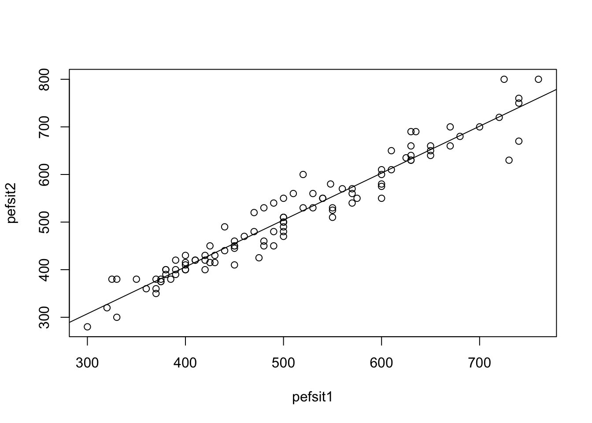
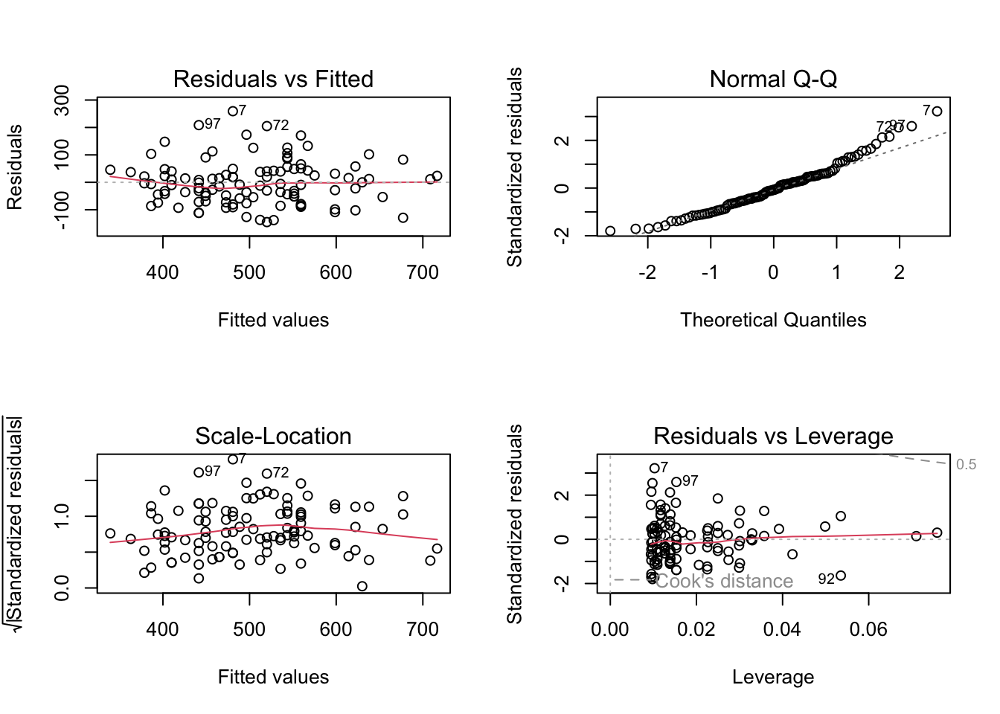
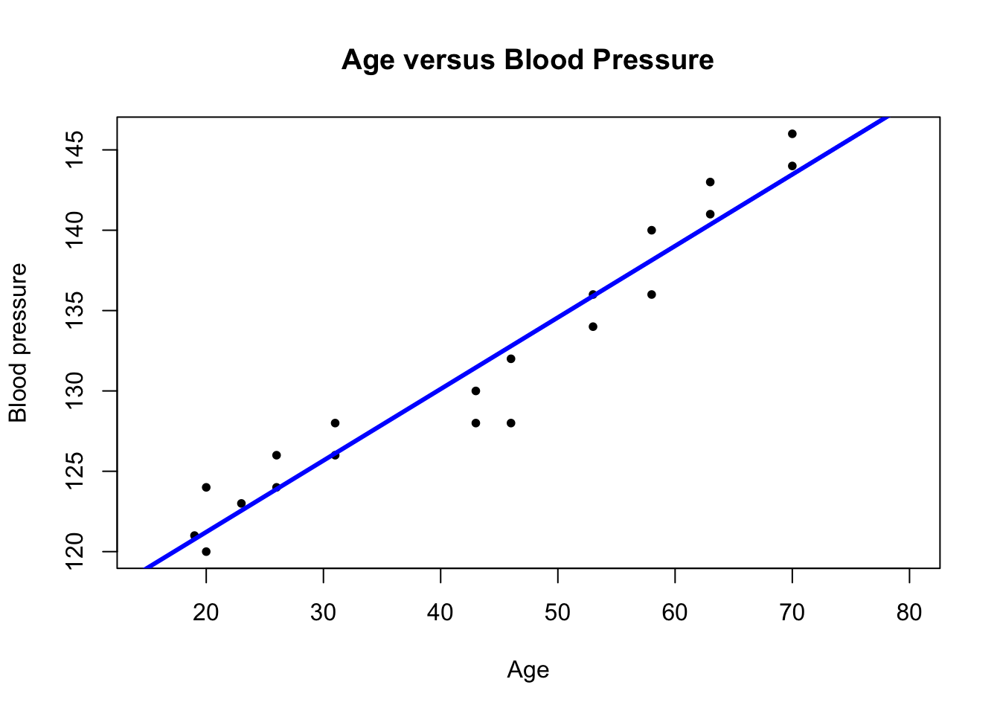
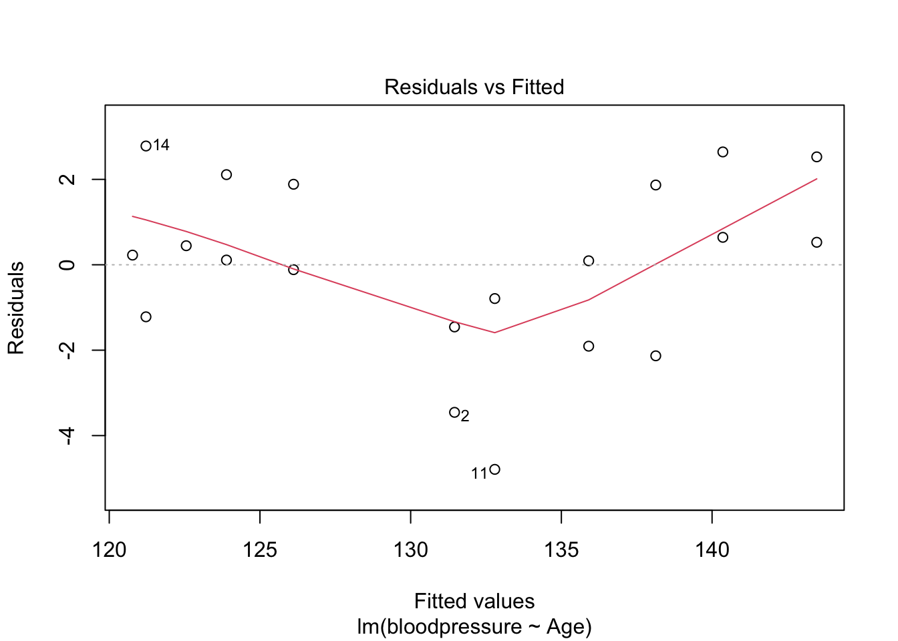

Lung function has been measured on 106 medical students. Peak expiratory flow rate (PEF, measured in liters per minute) was measured three times in a sitting position, and three times in a standing position.
The variables are
Age (years)
Gender (female, male)
Height (cm)
Weight (kg)
PEF measured three times in a sitting position (pefsit1, pefsit2, pefsit3)
PEF measured three times in a standing position (pefsta1, pefsta2, pefsta3)
Mean of the three measurements made in a sitting position (pefsitm)
Mean of the three measurements made in a standing position (pefstam)
Mean of all six PEF values (pefmean)
1a)
Make a scatter plot of pefsit2 versus pefsit1; and make a separate scatter plot of pefsit1 versus weight. Insert a regression line on top of the scatter plots.
Note: You can add a regression line on top of an existing scatter plot by using the abline(reg = lm(y ~ x)), where x is the variable in the x-axis and y is the variable on the y-axis of the scatterplot.
lung_data <-read.csv('data/PEFH98-english.csv')# head(lung_data)# assign variables (not strictly necessary)pefsit1 <- lung_data$pefsit1pefsit2 <- lung_data$pefsit2weight <- lung_data$weight# scatter plot: pefsit2 vs pefsit1#Simple version (using default plot options):plot(x = pefsit1, y = pefsit2)abline(lm(pefsit2 ~ pefsit1, data = lung_data))

#Alternative using the formula notation:# plot(pefsit2 ~ pefsit1, data=lung_data)par(mfrow =c(1, 2)) # make plots in 1 row 2 col#More elaborate version:plot(x = pefsit1, y = pefsit2, main ='PEF sit1 vs PEF sit2', #add a plot headingxlab ='pefsit1', ylab ='pefsit2', #change the axis labelspch =20) #change the point typeabline(lm(pefsit2 ~ pefsit1, data = lung_data), col ='blue', lwd =3) #change the line colour and width# scatter plot: pefsit1 vs weightplot(x = weight, y = pefsit1, main ='Weight vs pefsit1', xlab ='Weight', ylab ='pefsit1', pch =20)abline(lm(pefsit1 ~ weight, data = lung_data), col ='blue', lwd =3)
Both graphs show a quite nice linear association.
1b)
Compute the correlation between pefsit1 and pefsit2; and between pefsit1 and weight.
Why is the correlation between the first pair closer to 1 than the second pair?
Note: You can get the pair-wise correlation between many other pairs of variables using cor(your_data). Be mindful of missing values in your data; if there are any missing values, you can still calculate the correlation by using `cor(your_data, use=‘pairwise.complete.obs’).
cor(pefsit2, pefsit1) # need to remove NA here
[1] NA
which(is.na(pefsit1)) # no missing
integer(0)
which(is.na(pefsit2)) # 66th missing
[1] 66
# option 1: cor() removes NA for you # specify use complete observationscor(pefsit2, pefsit1, use ='pairwise.complete.obs')
[1] 0.9693111
# option 2 (advanced): you process (remove) the row of missing # from both variables (remove element 66)pefsit2_narm <- pefsit2[!is.na(pefsit2)]pefsit1_narm <- pefsit1[!is.na(pefsit2)]# use pefsit2_narm instead of pefsit2 to compute cor# should be the samecor(pefsit2_narm, pefsit1_narm)
Pearson's product-moment correlation
data: pefsit2 and pefsit1
t = 40.016, df = 103, p-value < 2.2e-16
alternative hypothesis: true correlation is not equal to 0
95 percent confidence interval:
0.9550846 0.9790797
sample estimates:
cor
0.9693111
The output indicates a very significant correlation between pefsit2 and pefsit1 (r=0.97, p < 0.001). This could be expected from observing the scatterplot.
For pefsit1 and weight it is straightforward, as there is not missing data.
# pefsit1, weightcor.test(pefsit1, weight)
Pearson's product-moment correlation
data: pefsit1 and weight
t = 10.152, df = 104, p-value < 2.2e-16
alternative hypothesis: true correlation is not equal to 0
95 percent confidence interval:
0.5948116 0.7899585
sample estimates:
cor
0.7055166
This again shows a very small p-value (r = 0.71, p < 0.001), which indicates that the correlation between pefsit1 and weight is significant. However, the value of the correlation is slightly lower than for pefsit2 and pefsit1, and this corresponds to the slightly worse fit of the line in the scatter plot.
To compute the correlation between multiple pairs, you need to select a few variables first.
# pairwise for multiple pairs # use age, height, weight, pefsit1, pefsit2, pefsit3, pefmean# select a smaller dataset lungdata2 <- lung_data[, c('age', 'height', 'weight', 'pefsit1', 'pefsit2', 'pefsit3', 'pefmean')]head(lungdata2, 3)
# produce correlation matrix for all the variables here# round(1.2345, digits = 2) gives 1.23round(cor(lungdata2, use ='pairwise.complete.obs'), digits =2)
The correlation table shows that age has a very low correlation to the other variables in the dataset, that height and weight are quite well correlated to the pefsit measurements, while (as expected) all pefsit measurements are very correlated with one another.
1c)
Carry out two regression analysis:
pefsit2 as dependent variable (y), pefsit1 as independent variable (x);
pefsitm as dependent variable (y), weight as independent variable (x).
Interpret the results in relation to the scatter plots.
# pef2 vs pef 1lm_pef2_pef1 <-lm(pefsit2 ~ pefsit1, data = lung_data)summary(lm_pef2_pef1)
Call:
lm(formula = pefsit2 ~ pefsit1, data = lung_data)
Residuals:
Min 1Q Median 3Q Max
-101.136 -13.458 -2.588 9.009 75.816
Coefficients:
Estimate Std. Error t value Pr(>|t|)
(Intercept) 11.73107 12.75039 0.92 0.36
pefsit1 0.98549 0.02463 40.02 <2e-16 ***
---
Signif. codes: 0 '***' 0.001 '**' 0.01 '*' 0.05 '.' 0.1 ' ' 1
Residual standard error: 28.66 on 103 degrees of freedom
(1 observation deleted due to missingness)
Multiple R-squared: 0.9396, Adjusted R-squared: 0.939
F-statistic: 1601 on 1 and 103 DF, p-value: < 2.2e-16
The regression coefficient for pefsit1 is highly significant (p < 0.001), the estimated regression line is pefsit2 = 11.7 + 0.98 * pefsit1, with the 95% confidence interval for the slope coefficient being (0.94, 1.03), and R^2 = 93.96%. The model is highly statistically significant (p < 0.001).
# pef1 vs weight lm_pef1_weight <-lm(pefsit1 ~ weight, data = lung_data)summary(lm_pef1_weight)
Call:
lm(formula = pefsit1 ~ weight, data = lung_data)
Residuals:
Min 1Q Median 3Q Max
-145.025 -53.081 -6.085 41.587 259.269
Coefficients:
Estimate Std. Error t value Pr(>|t|)
(Intercept) -30.0819 53.2502 -0.565 0.573
weight 7.8587 0.7741 10.152 <2e-16 ***
---
Signif. codes: 0 '***' 0.001 '**' 0.01 '*' 0.05 '.' 0.1 ' ' 1
Residual standard error: 80.96 on 104 degrees of freedom
Multiple R-squared: 0.4978, Adjusted R-squared: 0.4929
F-statistic: 103.1 on 1 and 104 DF, p-value: < 2.2e-16
The regression coeficient for weight is highly significant (p < 0.001), the estimated regression line is pefsit1 = -30.08+7.86 * weight, with the 95% confidence interval for the slope coefficient being (6.32, 9.39). This second model seems again highly statistically significant, but the R^2 is much lower (49.78%).
Some comments on the two analyses:
We get a much better fit for pefsit1 vs pefsit2 than we get for pefsit1 vs weight. This is reasonable since the two PEF-values measure the same underlying quantity.
The confidence intervals tell us what the uncertainty in the estimate is. We have 95% confidence that the confidence interval covers the population value.
1d)
Perform a residual analysis for the analyses you did before. Interpret the results.
par(mfrow =c(2, 2)) # plot 2 by 2plot(lm_pef2_pef1)
plot(lm_pef1_weight)

The plots show a quite good adherence of the residuals to the normal distribution.
Exercise 2 (blood pressure)
The dataset bp contains data on 20 healthy adults on two variables, Age and Blood pressure. We will explore the relationship between these two variables.
2a)
Load the dataset. Find the correlation between age and blood pressure, and test if it is significant.
Fit a simple linear regression model, where blood pressure is the dependent variable and age is the independent variable. What is the 95% confidence interval for the regression slope parameter?
Also find the squared correlation coefficient between age and blood pressure. What does it mean?
Bonus task (homework): Plot the regression line, and check the residuals.
The estimated regression parameter is 0.445, and the 95% confidence interval is (0.387, 0.503). The squared correlation coefficient (R^2) between age and blood pressure is 0.935: this value is very close to 1 (as expected, having observed also a large correlation), and it means that there is a very good fit. In order to conclude that the model is adequate we should conduct a residual analysis as well.
The regression parameter is positive, meaning that blood pressure increases with age: the predicted blood pressure for a person at age 40 is 112.317 + 0.445*40 = 130.12, at age 75 it becomes 112.317 + 0.445*75 = 145.69.
Bonus task (homework): Plot the regression line, and check the residuals.
plot(x = bp$Age, y = bp$bloodpressure, xlim =c(15, 80))# add the regression line on topabline(lm(bloodpressure ~ Age, data = bp), col ='blue')

# residual plotspar(mfrow =c(2, 2)) # plot 2 by 2plot(lm(bloodpressure ~ Age, data = bp))

Source Code
---title: "Solutions - Linear regression I"description: "Simple regression, correlation"format: html: code-fold: false code-tools: trueeditor: source---Datasets* Exercise 1: `PEFH98-english` ([rda link](https://github.com/ocbe-uio/teaching_mf9130e/blob/main/lab/data/PEFH98-english.rda), [csv link](https://github.com/ocbe-uio/teaching_mf9130e/blob/main/lab/data/PEFH98-english.csv))* Exercise 2: `bp` ([rda link](https://github.com/ocbe-uio/teaching_mf9130e/blob/main/lab/data/bp.rda), [csv link](https://github.com/ocbe-uio/teaching_mf9130e/blob/main/lab/data/bp.csv))[R Script](https://github.com/ocbe-uio/teaching_mf9130e/blob/main/lab/code/8_linearreg-I.R)------------------# Examples (exercises with solution)## Exercise 1 (lung function)Lung function has been measured on 106 medical students. Peak expiratory flow rate (PEF, measured in liters per minute) was measured three times in a sitting position, and three times in a standing position.The variables are * Age (years) * Gender (female, male) * Height (cm) * Weight (kg) * PEF measured three times in a sitting position (pefsit1, pefsit2, pefsit3) * PEF measured three times in a standing position (pefsta1, pefsta2, pefsta3) * Mean of the three measurements made in a sitting position (pefsitm) * Mean of the three measurements made in a standing position (pefstam) * Mean of all six PEF values (pefmean) #### 1a) Make a scatter plot of `pefsit2` versus `pefsit1`; and make a separate scatter plot of `pefsit1` versus `weight`. Insert a regression line on top of the scatter plots. *Note: You can add a regression line on top of an existing scatter plot by using the `abline(reg = lm(y ~ x))`, where `x` is the variable in the x-axis and `y` is the variable on the y-axis of the scatterplot.*```{r}#| label: linear-1a-1#| warning: false#| echo: truelung_data <-read.csv('data/PEFH98-english.csv')# head(lung_data)# assign variables (not strictly necessary)pefsit1 <- lung_data$pefsit1pefsit2 <- lung_data$pefsit2weight <- lung_data$weight# scatter plot: pefsit2 vs pefsit1#Simple version (using default plot options):plot(x = pefsit1, y = pefsit2)abline(lm(pefsit2 ~ pefsit1, data = lung_data))#Alternative using the formula notation:# plot(pefsit2 ~ pefsit1, data=lung_data)par(mfrow =c(1, 2)) # make plots in 1 row 2 col#More elaborate version:plot(x = pefsit1, y = pefsit2, main ='PEF sit1 vs PEF sit2', #add a plot headingxlab ='pefsit1', ylab ='pefsit2', #change the axis labelspch =20) #change the point typeabline(lm(pefsit2 ~ pefsit1, data = lung_data), col ='blue', lwd =3) #change the line colour and width# scatter plot: pefsit1 vs weightplot(x = weight, y = pefsit1, main ='Weight vs pefsit1', xlab ='Weight', ylab ='pefsit1', pch =20)abline(lm(pefsit1 ~ weight, data = lung_data), col ='blue', lwd =3)```Both graphs show a quite nice linear association.#### 1b) Compute the correlation between `pefsit1` and `pefsit2`; and between `pefsit1` and `weight`. Why is the correlation between the first pair closer to 1 than the second pair?*Note: You can get the pair-wise correlation between many other pairs of variables using `cor(your_data)`. Be mindful of missing values in your data; if there are any missing values, you can still calculate the correlation by using `cor(your_data, use='pairwise.complete.obs').* ```{r}#| label: linear-1b-1#| warning: false#| echo: truecor(pefsit2, pefsit1) # need to remove NA herewhich(is.na(pefsit1)) # no missingwhich(is.na(pefsit2)) # 66th missing# option 1: cor() removes NA for you # specify use complete observationscor(pefsit2, pefsit1, use ='pairwise.complete.obs')# option 2 (advanced): you process (remove) the row of missing # from both variables (remove element 66)pefsit2_narm <- pefsit2[!is.na(pefsit2)]pefsit1_narm <- pefsit1[!is.na(pefsit2)]# use pefsit2_narm instead of pefsit2 to compute cor# should be the samecor(pefsit2_narm, pefsit1_narm)# option 3: cor.test automatically removes missing values:cor.test(pefsit2, pefsit1)```The output indicates a very significant correlation between `pefsit2` and `pefsit1 (r=0.97, p < 0.001)`. This could be expected from observing the scatterplot.For `pefsit1` and `weight` it is straightforward, as there is not missing data. ```{r}#| label: linear-1b-2#| warning: false#| echo: true# pefsit1, weightcor.test(pefsit1, weight)```This again shows a very small p-value (r = 0.71, p < 0.001), which indicates that the correlation between `pefsit1` and `weight` is significant. However, the value of the correlation is slightly lower than for `pefsit2` and `pefsit1`, and this corresponds to the slightly worse fit of the line in the scatter plot.To compute the correlation between multiple pairs, you need to select a few variables first.```{r}#| label: linear-1b-3#| warning: false#| echo: true# pairwise for multiple pairs # use age, height, weight, pefsit1, pefsit2, pefsit3, pefmean# select a smaller dataset lungdata2 <- lung_data[, c('age', 'height', 'weight', 'pefsit1', 'pefsit2', 'pefsit3', 'pefmean')]head(lungdata2, 3)# produce correlation matrix for all the variables here# round(1.2345, digits = 2) gives 1.23round(cor(lungdata2, use ='pairwise.complete.obs'), digits =2)```The correlation table shows that `age` has a very low correlation to the other variables in the dataset, that `height` and `weight` are quite well correlated to the `pefsit` measurements, while (as expected) all `pefsit` measurements are very correlated with one another.#### 1c) Carry out two regression analysis: * `pefsit2` as dependent variable (y), `pefsit1` as independent variable (x);* `pefsitm` as dependent variable (y), `weight` as independent variable (x).Interpret the results in relation to the scatter plots.```{r}#| label: linear-1c-1#| warning: false#| echo: true# pef2 vs pef 1lm_pef2_pef1 <-lm(pefsit2 ~ pefsit1, data = lung_data)summary(lm_pef2_pef1)confint(lm_pef2_pef1)```The regression coefficient for `pefsit1` is highly significant (p < 0.001), the estimated regression line is `pefsit2 = 11.7 + 0.98 * pefsit1`, with the 95\% confidence interval for the slope coefficient being (0.94, 1.03), andR^2 = 93.96\%. The model is highly statistically significant (p < 0.001).```{r}#| label: linear-1c-2#| warning: false#| echo: true# pef1 vs weight lm_pef1_weight <-lm(pefsit1 ~ weight, data = lung_data)summary(lm_pef1_weight)confint(lm_pef1_weight)```The regression coeficient for `weight` is highly significant (p < 0.001), the estimated regression line is `pefsit1 = -30.08+7.86 * weight`, with the 95\% confidence interval for the slope coefficient being (6.32, 9.39). Thissecond model seems again highly statistically significant, but the R^2 is much lower (49.78\%).Some comments on the two analyses:- We get a much better fit for `pefsit1` vs `pefsit2` than we get for `pefsit1` vs `weight`. This is reasonable since the two PEF-values measure the same underlying quantity. - The confidence intervals tell us what the uncertainty in the estimate is. We have 95\% confidence that the confidence interval covers the population value. #### 1d) Perform a residual analysis for the analyses you did before. Interpret the results.```{r}#| label: linear-2d-1#| warning: false#| echo: truepar(mfrow =c(2, 2)) # plot 2 by 2plot(lm_pef2_pef1)plot(lm_pef1_weight)```The plots show a quite good adherence of the residuals to the normal distribution.## Exercise 2 (blood pressure)The dataset `bp` contains data on 20 healthy adults on two variables, `Age` and `Blood pressure`. We will explore the relationship between these two variables.#### 2a)Load the dataset. Find the correlation between age and blood pressure, and test if it is significant. Fit a simple linear regression model, where blood pressure is the dependent variableand age is the independent variable. What is the 95% confidence interval for the regression slope parameter?Also find the squared correlation coefficient between age and blood pressure. What does it mean?*Bonus task (homework): Plot the regression line, and check the residuals.*```{r}#| label: linear-2a-1#| warning: false#| echo: true# load databp <-read.csv('data/bp.csv')head(bp)``````{r}#| label: linear-2a-2#| warning: false#| echo: true# correlation age vs bpcor(bp$Age, bp$bloodpressure)# or,cor(bp)# 95% CI, p-valuecor.test(bp$Age, bp$bloodpressure) ```Comment: the correlation between age and blood pressure is very close to 1 (0.9667), and it is highly statistically significant (p < 0.001).#### 2b)What is the blood pressure for a person at age 40? For a person at age 75? Comment.```{r}#| label: linear-2b-1#| warning: false#| echo: true# fit a linear regression modelmodel_age_bp <-lm(bloodpressure ~ Age, data = bp)summary(model_age_bp)confint(model_age_bp)# to predict (insert x), you need to put data in a data framepredict(model_age_bp, newdata =data.frame(Age =c(40, 75)), interval ='prediction')```The estimated regression parameter is 0.445, and the 95\% confidence interval is (0.387, 0.503). The squared correlation coefficient (R^2) between age and blood pressure is 0.935: this value is very close to 1 (as expected, having observed also a large correlation), and it means that there is a very good fit. In order to conclude that the model is adequate we should conduct a residual analysis as well. The regression parameter is positive, meaning that blood pressure increases with age: the predicted blood pressure for a person at age 40 is `112.317 + 0.445*40 = 130.12`, at age 75 it becomes `112.317 + 0.445*75 = 145.69`.*Bonus task (homework): Plot the regression line, and check the residuals.*```{r}#| label: linear-2b-2#| warning: false#| echo: trueplot(x = bp$Age, y = bp$bloodpressure, xlim =c(15, 80))# add the regression line on topabline(lm(bloodpressure ~ Age, data = bp), col ='blue')# residual plotspar(mfrow =c(2, 2)) # plot 2 by 2plot(lm(bloodpressure ~ Age, data = bp))```